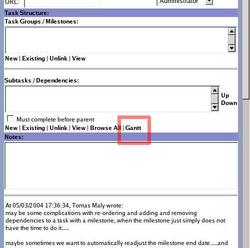
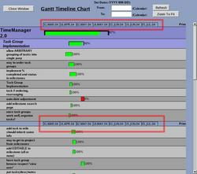

The Gantt chart shows a timeline-based graphical breakdown and summary of a project (or group of tasks). It can both provide a quick understanding as to the progress, or can point out any causes of delays/problems.

- Opening the Gantt from a project
- Opening the Gantt from a task group/milestone
- Opening the Gantt from a parent task
- Entering in dates
- Zoom to Fit
- Clicking on a task / milestone
- Timeline Ruler
- Opening the Gantt from a project:
- Opening the Gantt from a task group/milestone:
- Opening the Gantt from a parent task:
- Entering in dates:
- Zoom to Fit:
- Print:
- Clicking on a task / milestone:
- Timeline Ruler:
By clicking on 'Gantt' from within a project overview, one can then get to the graphical window for that project.

Simply click on 'Gantt' from within an edit page for a task group / milestone.

By clicking on 'Gantt' next to the Subtasks/task dependencies section in a task, one can get a Gantt chart of the parent task and all dependencies/subtasks.
By entering in dates and refreshing the graph, one gets a more refined display for exactly those dates. This becomes very useful when projects become months long and you just want to know what's going on this week.
'Zoom to fit' provides a way to fit the entire set of tasks (i.e. project) within the screen. It helps you see everything at once.
The ruler shows how many screen pixels equate to days/weeks. The ruler repeats every 10 rows of data, so as to allow for scrolling yet being able to read/estimate the dates of tasks based upon the progress meter bar.
